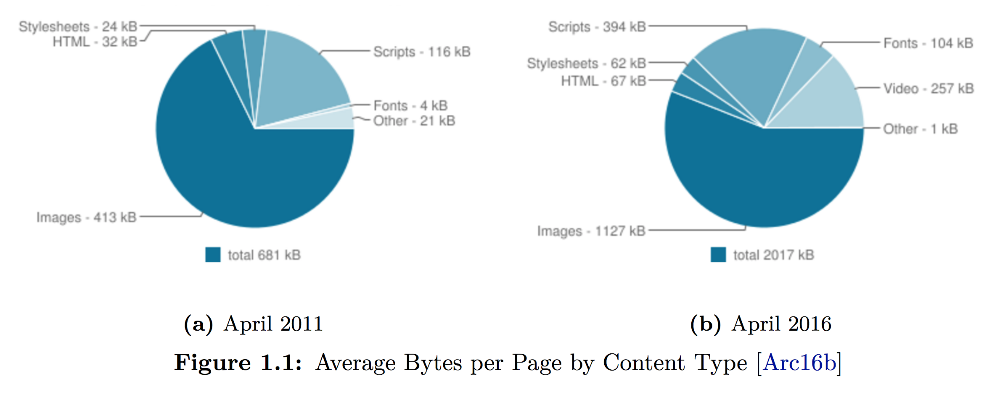
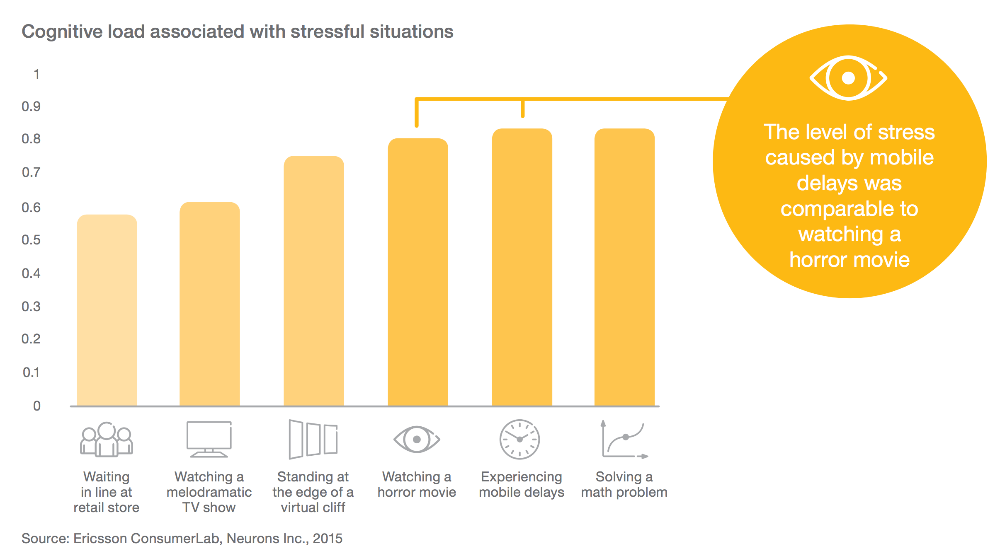
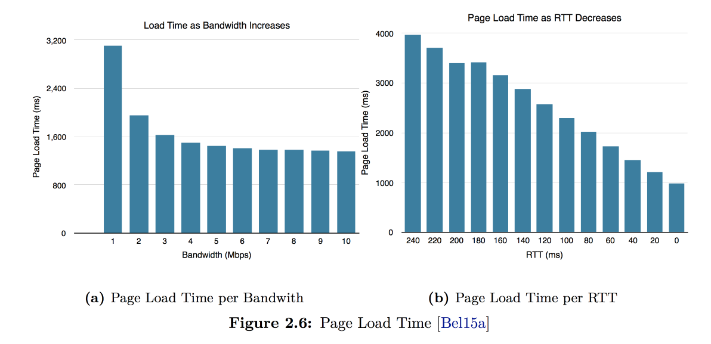
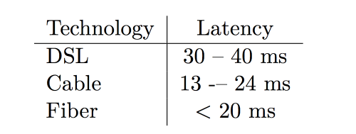
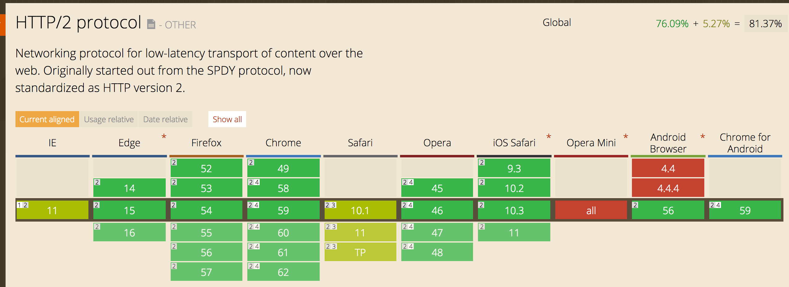
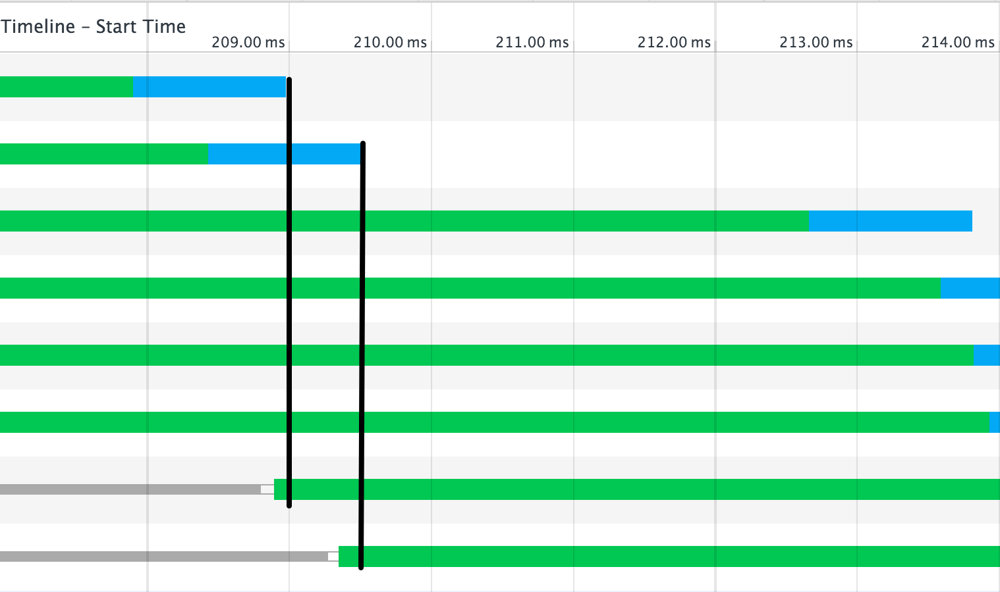
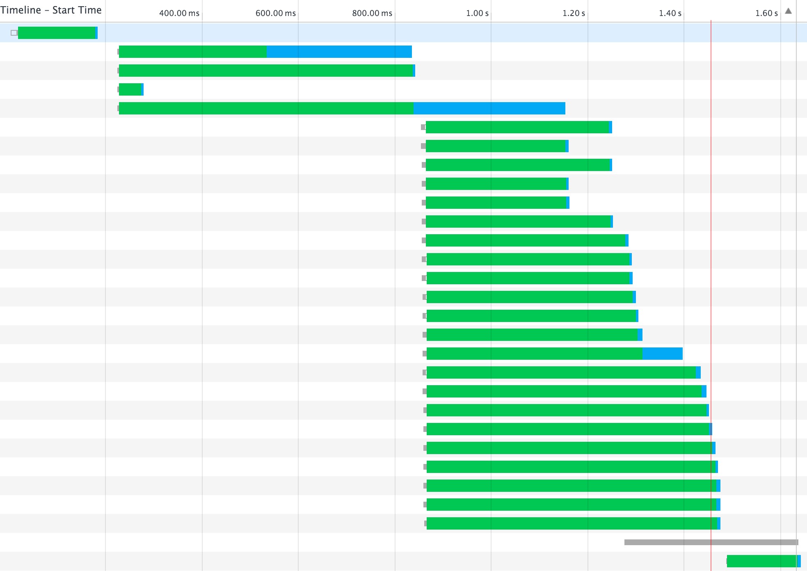
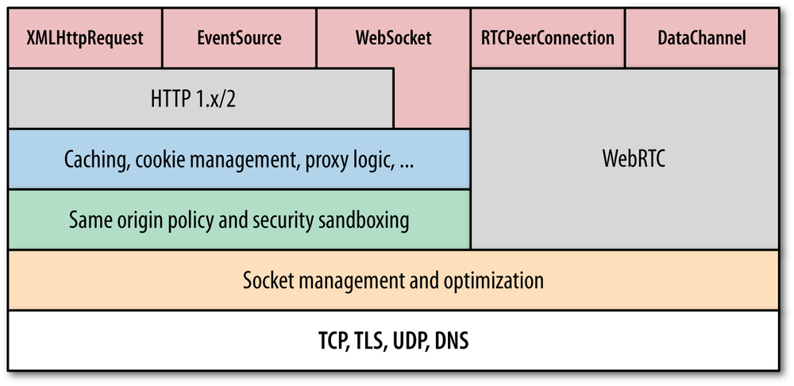
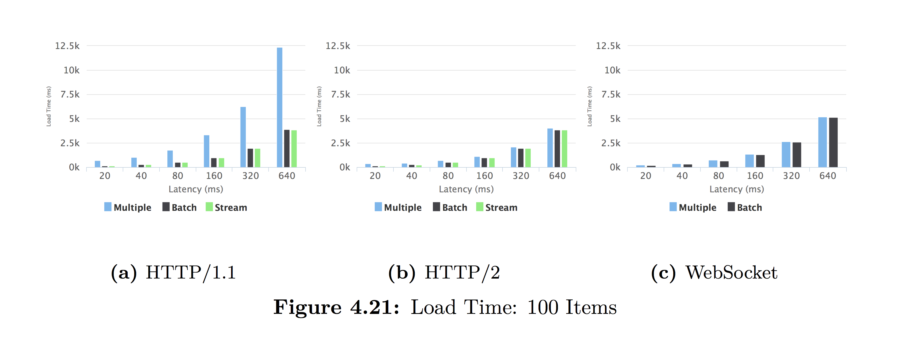
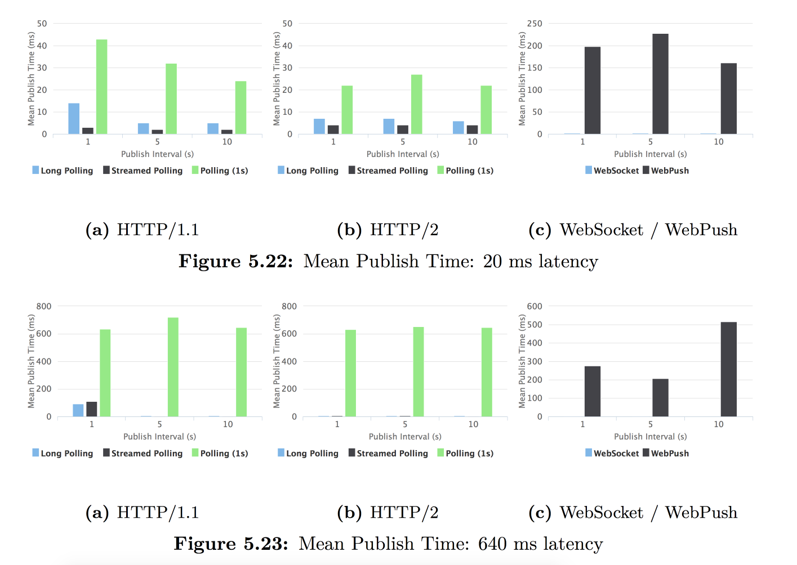

layout: true class: theme-whiskey, slides-left --- name: cover # HTTP/2 for data networking Michael Jaser<br> Peerigon GmbH<br> [@mmeaku](https://twitter.com/mmeaku) <img id="slide-cover-img" src="./assets/peerigon-logo.png" width="400"> --- layout: true class: theme-whiskey, slides-centered --- class: slides-chapter ## Motivation ---  --- <img src="./assets/httparchive-domains-requests.png" style="width: 60vw" /> ---  ---  --- ## How does this affect internet users worldwide? <img src="./assets/internet_users_by_country.png" style="width: 60vw" /> --- ## But how about the US / Europe / ... <img src="./assets/lte-connections.png" style="width: 60vw" /> --- ## Latencies  <img src="./assets/latency-mobile.png" style="width: 30vw" /> --- class: slides-chapter ## HTTP/2 --- - HTTP/1.1 was standardized in 1997 (20 years ago!) - the web changed a lot - too many workarounds (i.e. domain sharding) - started as SPDY - standardized 2015 --- ## Browser Support  --- class: slides-chapter ## Features --- ## Header Compression - we use many headers - headers are always sent with the request - we already compress the body - let's just compress headers too! --- ## Head of line blocking  - max 6 concurrent connections per domain - wait for response before dispatching next request - Workaround: Domain sharding i.e. img.peerigon.com --- ## Connection multiplexing - connections are expensive - Goal: a single connections per origin - Requests are multiplexed => cheap request :) - no more HOL --- ## HTTP/1.1 <img src="./assets/newhttp1.png" style="width: 40vw" /> --- ## HTTP/2  --- ## Binary transfer / Streams - binary transfer instead of ASCII - simpler implementation, easier to multiplex using streams --- ## Server Push - ability to provide data for the client in advance - i.e. if you request index.html, the server sends style.css too - loaded only if the client approves (loads the ressource) - not like websocket "push" --- ## Ecryption by default - not officially in the spec - implemented as SSL only by all Browsers --- class: slides-chapter ## Impact on data networking --- ## HTTP/2? - sending multiple requests is not a big deal anymore (i.e. polling, REST) - workarounds are antipatterns now, i.e. domain sharding --- ## Possible "transports"  --- ## Comparison: Fetch  --- ## Comparison: Push  --- ## Thinks to consider - WebSockets are not supported within a ServiceWorker - WebSockets can't reuse an existing HTTP/2 connection - Streams spec and `fetch` are your friend - A single connection is what you want :) --- ## Thank you